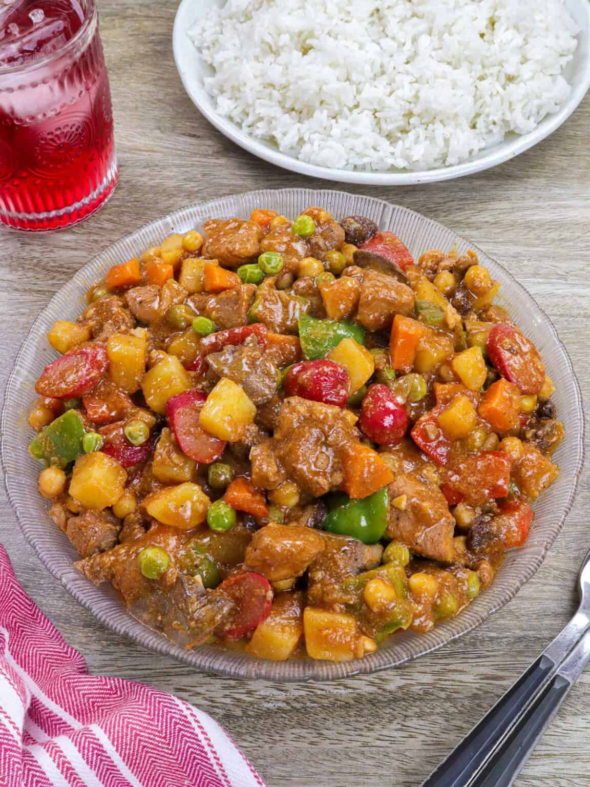

Home
Menudo recipe

Finished menudo recipe
Ingredients
- Potatoes and carrots
- Bellpeppers
- Hot dogs
- Liver
- Pork
- Soy sauce and calamansi juice
- Oil
- Onions and garlic
- Tomato sauce
- Tomato paste
- Water
- Garbanzo beans and green peas
- Maggi Magic Sarap
Steps
- Marinate with soy sauce, calamansi/lemon juice, and pepper in a bowl. Drain well, reserving marinade.
- Brown the potatoes and carrots in a pan. Remove from heat and drain on paper towels. Saute the bell peppers until lightly browned, then set aside.
- Cook hot dogs until lightly browned. Remove and set aside. Sear the liver just until lightly browned. Remove and set aside.
- Saute onion and garlic softened. Add the marinated pork and cook until lightly browned.
- Add tomato paste and stir until evenly distributed. Add the reserved marinade, tomato sauce, and water. Stir to distribute and bring to a boil, skimming scum that floats on top. Lower heat, cover, and simmer for about 35 to 45 minutes or until the pork is tender and sauce is slightly reduced.
- Add potatoes, carrots, hotdogs, garbanzos, raisins, and green peas. Cook until potatoes and carrots are tender. Add liver and let stand for a few seconds before stirring. Continue to simmer until cooked through. Add bell peppers.
- Season with Maggi magic sarap.
- Continue to cook until the sauce is reduced and slightly thickened.